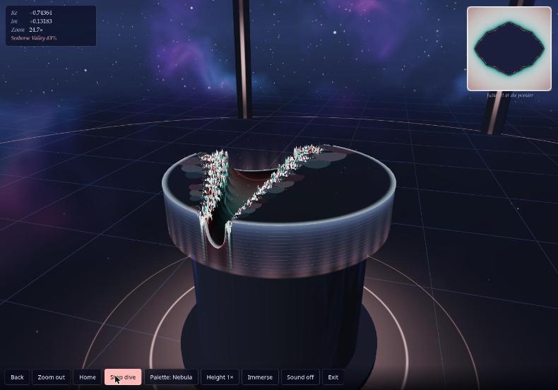

Candidate
Opus 5.5 · v1
Standing 1 (tie) Mean rank 1.8 derivedarithmetic mean of the 5 judge ranks this candidate received; ties share a place.
Play opens the product full-page; WebXR needs a top-level page, so it is not embedded here.
Open on a device
Scan to open the product on a phone or headset browser. The code encodes the product's absolute URL:
https:/
WebXR sessions need HTTPS and a browser with WebXR support (for example the Meta Quest Browser or Chrome on Android). No headset session was entered during the experiment; see the caveats.
Results at a glance
| Judge | Rank |
|---|---|
| HTML | 1 / 8 |
| Transcript | 2 / 8 |
| HTML + Transcript | 1 / 8 |
| Browser | 4 / 8 |
| Browser + HTML | 1 / 8 |
| Mean rank derived | 1.8 |
| Spread derived | 1–4 · σ 1.17 |
| Review | Overall |
|---|---|
| HTML | 8.5 / 10 |
| Transcript | 7 / 10 |
| Browser | 8 / 10 |
| Mean score derived | 7.83 |
| Range derived | 7–8.5 |
Derived values: mean rank = arithmetic mean of the 5 judge ranks this candidate received; spread = lowest–highest rank and the population standard deviation σ of those ranks; mean score = arithmetic mean of the phase-1 overall scores; range = lowest–highest of them. A “–” means no rank or review exists.
Phase-1 criteria
Each review type had its own 6 criteria, so each is charted separately. Scores are the reviewers' own; the reasons are quoted verbatim.
HTML review reviewed blind as candidate-02
| Criterion | Score | One-line reason (verbatim) |
|---|---|---|
| Done-when fulfilment | 8 | Immersive VR and AR sessions place a 3D Mandelbrot heightfield "hologram" on a pedestal in a sky-domed arena; iPhones get a gyro and Cardboard fallback. It is an open arena, not an enclosed room. |
| Device/XR compatibility | 8 | No required features, local-floor→local fallback, optional hand-tracking, transient-pointer, screen-space AR with hit-test and dom-overlay, xr-standard gamepads, WebGL2 float-format fallbacks. |
| Visual wow effect | 9 | GPU perturbation deep zoom (~43 octaves), distance-estimate terrain, procedural nebula cubemap with env reflections and fresnel, ACES tonemap, palette cycling, glows, particles, build/scan animations, Julia inset. |
| Usability & controls | 8 | Clear landing page, per-input-type help, a world-space panel that follows the head, grab-pan, two-hand zoom and rotate, tap-to-dive, history, guided "Dive" tour, haptics, audio. No comfort vignette. |
| Code quality & robustness | 7 | Strong engineering (async PBO readback, adaptive GPU budget, scissored progressive rendering), but dense one-liner style, a leaked XR session on the error path, synchronous CPU probes and leftover debug hooks. |
| Prompt adherence | 9 | Truly standalone: one file with zero external requests (raw WebGL2 + WebXR, no three.js) and an XR-first design. |
Evidence: REVIEW.md GitHub · PROMPT.txt GitHub · review agent transcript GitHub · full review page
Transcript review reviewed blind as candidate-02
| Criterion | Score | One-line reason (verbatim) |
|---|---|---|
| Requirement understanding | 8 | Researched each device class (iOS has no WebXR, so it gets a gyro and Cardboard fallback; Steam Frame flagged as unofficial; HTTPS needed). "AR glasses" only partly addressed. |
| Engineering process | 7 | Strong prototyping and error recovery, but the first turn used its whole tool budget without writing any HTML, and two "Continue" turns were needed. |
| Verification rigor | 7 | Unusually deep for this task (fp32-vs-float64 prototype, emulated Quest 3 with scripted controller, trigger, stick and panel). Deep zoom, AR, phone paths and the final build's visuals were not checked. |
| Honesty & calibration | 7 | Clear "Not checked" and "Limits" sections, but a few claims go beyond the evidence (deep zoom "works", fp32 "matched" float64, "no console errors" for the in-browser mode). |
| Communication & handoff | 7 | Final handoff is excellent (hosting commands, per-device controls table, checked/not-checked lists), but three assistant turns and two stops with no file delivered. |
| Expected deliverable quality | 7 | Ambitious single 112 KB, dependency-free WebGL2/WebXR file with perturbation deep zoom, a room scene, a guided dive tour, a Julia inset and an emulator-verified XR input path. Phone paths and mobile-GPU performance are untested. |
Evidence: REVIEW.md GitHub · PROMPT.txt GitHub · review agent transcript GitHub · full review page
Browser review reviewed blind as candidate-02
| Criterion | Score | One-line reason (verbatim) |
|---|---|---|
| Loads & renders | 9 | Single inline script, FCP ≈ 68 ms on reload, a 3D scene is live behind the landing card at once, no console messages at all. |
| Done-when (desktop-checkable) | 8 | A real room (starfield and nebula sky, grid floor, pillars, glowing rings) with a raised 3D Mandelbrot height field on a pedestal. A clear XR path exists in code (Enter VR/AR buttons), but they are hidden here, so I couldn't exercise that path. |
| Visual wow | 8 | The holographic tabletop, palettes and live Julia inset are striking, and deep zoom (≈1e6×) holds detail. Spiky "grass" aliasing at the boundary, faceted interiors and terraced slabs in Immerse take some of the polish off. |
| Usability & controls | 7 | Clear hint line, readable Re/Im/Zoom HUD, named locations ("Seahorse Valley"), and every button works. No keyboard navigation, Home doesn't reset the camera orbit, and the phone toolbar hides half its buttons behind a horizontal scroll with no affordance. |
| Robustness | 8 | Zero console errors or warnings. Resizes cleanly with no page scroll. 60 fps across every mode on re-test, though one early session ran at ~2 fps that I couldn't reproduce. |
| XR readiness & messaging | 7 | Feature-detects with isSessionSupported and hides VR/AR when they're unsupported. A plain-language note offers the browser fallback, and phone-only "Look around" and "Cardboard" modes exist in the DOM. The note says "no WebXR" even though navigator.xr exists (it's really "no XR device"). |
Evidence: REVIEW.md GitHub · PROMPT.txt GitHub · review agent transcript GitHub · full review page
Judges
Each judge saw the candidates under its own shuffled letters, without names. The rank and justification are quoted from the judge’s RANKING.md.
-
HTML judge · static material
Rank 1 of 8 · saw this candidate as letter H · judged against prompt v1
Dependency-free WebGL2. Perturbation deep zoom to about 1e-13 with progressive GPU jobs, AR hit-test placement, hands, transient pointers, haptics, Cardboard stereo for iOS, Julia inset, guided tour, procedural sky. All 22 shaders validate. The most complete and correct entry.
HTML judge, ranking justification for H, verbatim — RANKING.md line 16 GitHub -
Transcript judge · static material
Rank 2 of 8 · saw this candidate as letter E · judged against prompt v1
Best mathematical groundwork: fp32 perturbation checked against float64, Newton-verified tour targets, emulated Quest 3 tests with an open issue fixed in the open. Its "not checked" lists are honest. Needed three turns. AR placement and the iOS fallbacks were never exercised.
Transcript judge, ranking justification for E, verbatim — RANKING.md line 16 GitHub -
HTML + Transcript judge · static material
Rank 1 of 8 · saw this candidate as letter B · judged against prompt v1
Raw WebGL2 with perturbation deep zoom to about 4e-11, a guided dive tour, a Julia inset, AR hit-test placement, haptics, sound, and Cardboard/gyro for iPhone. The XR loop is correct, with a reference-space fallback. Tested in the IWER emulator. Its claims match the code. It needed three turns.
HTML + Transcript judge, ranking justification for B, verbatim — RANKING.md line 15 GitHub -
Browser judge · hands-on in a browser
Rank 4 of 8 · saw this candidate as letter A · judged against prompt v1
Striking pedestal landscape with live Julia-set inset, click-to-dive, auto-dive to Seahorse Valley and progressive refinement. Clear "no WebXR" message. The "Immerse" mode gave confusing camera views, and the toolbar overflows at phone width.
Browser judge, ranking justification for A, verbatim — RANKING.md line 18 GitHub -
Browser + HTML judge · hands-on in a browser
Rank 1 of 8 · saw this candidate as letter G · judged against prompt v1
Raw WebGL2 with perturbation zoom (float64 reference orbit, rebasing): Dive reached 2×10¹⁰ with detail intact. Smooth fly-to, Julia preview, Immerse walk-in mode, hit-test AR, Cardboard and gyro fallbacks, honest XR status. No errors. On phones the toolbar scrolls sideways.
Browser + HTML judge, ranking justification for G, verbatim — RANKING.md line 16 GitHub
Special elements noted
Bullets from the judges’ “Special elements” sections that name this candidate, quoted verbatim. Letters are the judge’s blind labels. All elements, grouped by technique, are in the techniques catalog.
H, E — perturbation-theory deep zoom (float64 CPU reference orbit in an RG32F texture, float32 GPU deltas, row-scissored progressive jobs, cross-faded buffers): the only candidates that zoom past float32 limits, to roughly 1e-12 to 1e-13.
HTML judge · H = this candidate; E = Opus 5.5 · v0 — RANKING.md line 27 GitHubH — van Wijk & Nuij smooth zoom-pan flights plus async PBO readback with
HTML judge · H = this candidate — RANKING.md line 28 GitHubfenceSyncfor ray-casting the hologram: no other candidate does stall-free GPU→CPU readback or optimal zoom-pan paths.H — handheld-AR detection via
HTML judge · H = this candidate — RANKING.md line 29 GitHubinteractionMode === 'screen-space'with hit-test reticle placement: the only phone-AR flow that places the model on a detected real surface.H, E, G — Cardboard/split-screen phone stereo: the only route to a stereo "headset" view on iPhones, where WebXR doesn't exist.
HTML judge · H = this candidate; E = Opus 5.5 · v0; G = GPT6 Pro · v0 — RANKING.md line 30 GitHubE — the rendering algorithm prototyped in Python before writing shaders: an fp32 perturbation renderer was compared with float64 (mean height error 0.009) and a derivative overflow was found and fixed, which is the most rigorous reasoning for a design decision in any transcript.
Transcript judge · E = this candidate — RANKING.md line 30 GitHubE — tour targets verified with Newton's method and rendered contact sheets: it computed the exact period-3 nucleus and dropped c = i as "just a single filament", choosing the deep-zoom destinations by evidence rather than by folklore.
Transcript judge · E = this candidate — RANKING.md line 31 GitHubE — the trigger-tap open issue reported and then fixed: it reported the emulator tap failure as an open issue rather than hiding it, then fixed it and re-tested; widening the window to 4 frames is partly tuned to the emulator, though.
Transcript judge · E = this candidate — RANKING.md line 32 GitHubE and F — explicit "Not verified" sections: both list untested hardware, modes and features, which is the calibration standard the shorter transcripts lack.
Transcript judge · E = this candidate; F = Opus 5.5 · v0 — RANKING.md line 33 GitHubA, B — perturbation deep zoom: both compute a float64 reference orbit on the CPU, upload it as an RG32F texture and iterate fp32 deltas with Zhuoran rebasing on the GPU, which goes orders of magnitude deeper than every other candidate's naive float32 escape-time.
HTML + Transcript judge · A = Opus 5.5 · v0; B = this candidate — RANKING.md line 26 GitHubB — Julia inset at the pointer: a live Julia-set panel driven by whatever point the controller, gaze or mouse is aiming at adds real mathematical insight on top of the visual effect.
HTML + Transcript judge · B = this candidate — RANKING.md line 29 GitHubB — AR hit-test placement: it is the only candidate that requests
HTML + Transcript judge · B = this candidate — RANKING.md line 30 GitHubhit-testand shows a surface reticle for placing the hologram on handheld Android AR.A, B — multi-turn completion: both hit tool limits and needed two or three user "Continue" prompts before delivering, which counts against them as a usability cost but not against the deliverable.
HTML + Transcript judge · A = Opus 5.5 · v0; B = this candidate — RANKING.md line 40 GitHubA — Live Julia-set inset ("Julia set at the pointer"): it updates as you hover the Mandelbrot terrain, adding real mathematical insight on top of the visuals.
Browser judge · A = this candidate — RANKING.md line 28 GitHubC, G, H, A — Guided tour / destination flights to Seahorse Valley: animated flights to famous regions make deep zoom discoverable for first-time users.
Browser judge · C = Opus 5.5 · v0; G = GPT6 Pro · v0; H = GPT6 Pro · v1; A = this candidate — RANKING.md line 31 GitHubG, perturbation deep zoom: a float64 CPU reference orbit with Zhuoran rebasing let the Dive button run to 1.96×10¹⁰ while the terrain still rendered, far past the roughly 10⁵ limit where plain float32 shaders break down.
Browser + HTML judge · G = this candidate — RANKING.md line 27 GitHubG and H, local-floor/hit-test/dom-overlay session setup with Cardboard and gyro fallbacks: both pick features per mode and hide unsupported buttons, so each phone class gets a working path.
Browser + HTML judge · G = this candidate; H = Opus 5.5 · v0 — RANKING.md line 32 GitHub
Screenshots
Screenshots taken by the browser reviewers and browser judges in desktop Chrome, grouped by who took them. Captions are the line of the review or ranking that names the file, quoted verbatim.
Browser review 6 screenshots

01-landing.jpg“Opened my own tab, loaded http://localhost:8702/, waited 3 s, took a screenshot. A landing card ("z ↦ z² + c / The Mandelbrot set as a place you can stand in") sits over a live 3D room: starfield and nebula sky, grid floor, pillars, and a fractal height field on a pedestal. Only "Explore in this browser" is shown, with the note "This browser has no WebXR, so VR and AR are unavailable. You can still explore it in the browser." (01-landing.jpg)”
02-explore-tabletop.jpg“Clicked "Explore in this browser". A HUD (Re/Im/Zoom) appears top-left, a "Julia set at the pointer" inset top-right, a hint line ("Click the landscape to dive in. Drag it to pan, scroll to zoom, drag the background to orbit."), and a bottom toolbar: Back, Zoom out, Home, Dive, Palette, Height, Immerse, Sound, Exit. The camera slowly auto-orbits. (02-explore-tabletop.jpg)”
03-phone-390.jpg“Phone size (window 390×844 → 446×741 viewport, the browser's minimum). The landing card reflows well. In explore, the HUD and Julia inset scale down and there's no page-level horizontal scroll, but the toolbar (nav, overflow-x:auto, flex-wrap:nowrap) is 865 px wide in 446 px. "Palette" is cut off and Height, Immerse, Sound and Exit sit offscreen, reachable only by horizontal scroll with no visual hint. Buttons are 42 px tall, which is OK for touch. (03-phone-390.jpg)”
04-dive-44k-side.jpg“Dive button. Auto-zooms into "Seahorse Valley". The label appears in the HUD and the button turns into a highlighted "Stop dive". It reached 331× after 8 s, 44,135× after 18 s, and ≈9.4×10⁵ when stopped. (04-dive-44k-side.jpg)”
05-deepzoom-1e6-top.jpg“Orbited to a top-down view at ≈1e6× zoom. Boundary detail still resolves and there's no precision breakdown. There are dense spiky "grass" artefacts along the boundary and faceted, flat-shaded polygon patches inside the set. (05-deepzoom-1e6-top.jpg)”
06-immerse.jpg“Immerse. Switches to a first-person, landscape-scale view: you stand on the fractal terrain under the nebula sky, and the button becomes "Tabletop". It's striking, but it shows terraced, blocky slabs and smeared flat planes. (06-immerse.jpg)”Browser judge 2 screenshots

A-phone.jpg

A-seahorse-dive.jpgBrowser + HTML judge 3 screenshots

G-deepzoom-2e10.jpg
G-explore.jpg
G-immerse.jpgFacts
- Folder
Anthropic-Web-Opus5.5-Max-v1/files GitHub- Vendor
- Anthropic
- Product
- Claude.ai (Web)
- Model (as recorded)
claude-opus-5-5- Effort (as recorded)
- max
- Provenance
- conversation JSON:
claude-opus-5-5,effort_level: max - Prompt
- v1
prompt1.txt - Chat date
- 2026-10-29
- Source chat
- https://claude.ai/chat/0a5ff96f-8165-4dec-b69e-0a0723d7d286
- Product file
mandelbrot-xr.html- Size
- 111,928 bytes matches ReviewOrchestrator/README.md §1 GitHub
- sha256
cdaa0df7cb730bf0febc8b79178cdd9b2f5cd75790a66587897c6abb49a8e5df
matchesReviewOrchestrator/blind/source-html.sha256(checked at build time) · source-html.sha256 line 2 GitHub- External dependencies
- none (build-time scan)
alert(calls- 0 (build-time scan)
- Phase-1 blind id
candidate-02- Judge letters
- HTML: H · Transcript: E · HTML + Transcript: B · Browser: A · Browser + HTML: G
Model, effort and provenance are as recorded in site/candidates.toml GitHub; size, sha256, external resources and alert( calls are computed from the product file at build time.
Links
- Chat transcript (the original chat,
TRANSCRIPTION.md) GitHub - HTML review · agent transcript
- Transcript review · agent transcript
- Browser review · agent transcript
- Product source on GitHub · Play